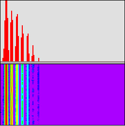
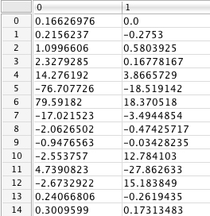

f07. Gabor — FFT for Sound Analysis
Short-term Fourier transform
The Fourier transform is an algorithmic process that converts a time-domain representation of a signal into a frequency-domain representation of its spectrum. Since the Fourier theorem only strictly applies to infinitely repeating signals—a condition that doesn't truly apply to real-world sounds—one commonly performs the transform on a short-term windowed slice of sound. To represent changes in the spectrum over time, one simply performs multiple short-term Fourier transforms on consecutive—or overlapping—slices. Each slice is like a snapshot of the frequency content of the signal at that very short "instant" in time.
Since a fmat or fvec that contains an audio signal is like a short-term quasi-instant of time "frozen" in a static matrix (as opposed to passing in real time like a MSP signal), FTM is perfectly suited to performing Fourier analysis on a short slice of audio. Once the Fourier anaysis is performed, other information about the sound can be derived from that, such as its formant (local peaks in amplitude in particular frequency regions), harmonicity (whole-number-multiple alignment of those peaks), likely fundamental frequency and period, and so on.
Windowing slices
As pointed out in the previous tutorial, taking a slice of an audio signal without consideration of its content will likely mean that the slice will not begin and end with the value 0. As we have shown, capturing an unaltered slice is like applying a rectangular window to the sound. If, as is usually the case, that window doesn't contain a precise number of cycles of a periodic waveform, then treating that windowed signal as if it were a cycle of a continuous waveform (say, by playing it back as a repeating grain) will add spurious frequencies. That's the main reason for using a tapering window function in the previous tutorial.
Similarly, performing a Fourier transform on a rectangular-windowed slice of sound would result in representing frequencies that don't actually exist in the original sound. Just as the tapering function reduces the spurious frequencies in a grain in granular synthesis, windowing a slice with a tapering function reduces the "spectral leakage" that normally occurs when performing a short-term Fourier transform on a sound that is inherently not infinitely periodic. Thus, for performing Fourier analysis in real time, the combination of gbr.slice~ and gbr.wind= is again appropriate.
Appropriate size and period of a slice for FFT
The Fast Fourier Transform (FFT) is a method for performing the discrete Fourier transform that maximizes the speed of computation by using a recursive process that requires that the number of samples be a power of 2. Therefore, the gbr.fft object must receive a fmat or fvec with a size that is a power of 2. (You can provide it a vector that has some other size, and gbr.fft will add 0 values to it to make an internal matrix that is the next larger power of 2. For example, if you give it a vector of 882 values, it will append 142 more 0 values so that the size of its internal matrix will be 1024, a power of 2.)
Increasing the size of the vector (the number of audio samples in the slice) commensurately increases the frequency resolution of the Fourier transform. However, since increasing the number samples also means increasing the amount of time the slice represents, that also means that the temporal resolution of the Fourier transform decreases. (That's another way of saying that the longer of period of time under consideration, the more time there is for the frequency content of that slice to change during the slice. The longer the slice, the less it resembles an infinitely short "instant".) Thus choosing the size of the slice is always a trade-off between frequency precision and temporal precision. In practice, the trade-off can be mitigated somewhat by taking overlapping slices of the input signal, thus reducing the effect of the temporal imprecision.
The frequency resolution is a factor of the sampling rate and the window size (number of samples in the slice). The Fourier transform will divide the total representable frequency range (from 0 to the Nyquist frequency, and from -Nyquist up toward 0) into a certain number of "bins" equal to the size of the window. Thus the size of each frequency bin is R/N Hertz, where R is the sampling rate and N is the window size in samples. With a sampling rate of 44,100 Hz and a window size of 1024, for example, each bin would represent an increment of 44,100/1024 = 43.0664 Hz.
The content of each bin is a complex number representing the real and imaginary components of the sinusoidal component at the corresponding frequency. By converting from cartesian x,y coordinates (real,imaginary) into polar magnitude,angle representation (amplitude, phase), we can derive useful information about the spectrum of the sound.
Strictly speaking, the Fourier transform is for converting a list of complex numbers into another list of complex numbers. However, audio signals are not complex numbers. Audio samples have only a real component; the imaginary component is 0. This means that (as alluded to in tutorial 4) the Fourier transform of an audio signal will contain a lot of redundant information. For that reason, gbr.fft has a "real" mode (which can be invoked by setting its @mode attribute to real) that performs a speedier algorithm and produces an output about half the size of its power-of-2 input vector (half plus 1, to be exact).
Displaying the frequency content of a sound
A visual representation of a sound in two dimensions is usually done as a graph of amplitude over time, and that's reasonably useful (within the limits of the number of pixels available for the display). A visual display of the spectrum of a sound at a given instant in time is usually done as a graph of amplitude over frequency, with time omitted from the graph (because we pretend that time is frozen at that instant). To display all three aspects of interest to us—amplitude, frequency, and time—we need to simulate three dimensions, either by using perspective to give a 3D rendering on three axes, or by using brightness or color intensity to represent one of the three dimensions.
The ftm.vecdisplay object can represent two dimensions in normal usage, and it can also represent the dimension of time by showing the recent history of how those other two dimensions have looked in the most recently received vectors. Instead of using the y axis to represent the values in the vector, as is normal in a 2D view, it uses color, and uses the y axis to represent the passage of time instead. The historical representation scrolls continuously to move past vectors downward, always leaving the most recent past vector at the top.
To cause a ftm.vecdisplay to show this history view, you just double-click on it (in a locked Patcher). That creates a divider in the display window, and you can drag that divider to determine how much of the display will be devoted to showing the most recently received vector and how much will display past vectors. (Double-clicking on the divider makes the history view go away.) In the object's Inspector window, you can set whether you want the past values to be represented using the brightness of one color or using several different colors, and you can choose the time interval with which the history scrolls and how many vertical pixels will be used per past vector.
The tutorial patch demonstrates display of a sound's spectrum in two dimensions—as a graph of (the logarithm of) amplitude over time—and also as a history of the amplitudes in the recent past.
• Open a sound file for sfplay~, start MSP, and play the sound.
Every 512 samples, gbr.slice~ places the most recent 1024 samples of the MSP signal into a vector. The vector is tapered by a Hann function by gbr.wind= and passed to the gbr.fft which calculates the real FFT of that vector.
Note that the slice size chosen for gbr.slice~ is a power of 2, and that the first argument of gbr.fft, specifying the size of the slice it will analyze, is set to be the same as the slices that are being fed to it. (Thus no zero-padding is necessary.) Because the vector size is 1024 and it is set to perform a real FFT, it will output a matrix of 513 rows (size/2+1) and two columns (the real and imaginary parts of the complex numbers produced by the transform). That matrix is used to set the contents of the fmat $fftslice.
• Stop MSP and double-click on the fmat to see its contents.
After the contents are placed in $fftslice, the matrix from gbr.fft is reduced to just its first 128 rows in another ftm.mess. Why do that? Well, since we know that each bin of the FFT represents an increment of 43 Hz, we know that rows 129 and up will represent frequencies above about 5,500 Hz. For most sounds we normally listen to, those high frequencies—while obviously important timbrally—do not contain the most vital information about the sound content, so we made the decision not to use up space displaying those frequencies.
The next ftm.mess calculates the logarithm of the absolute values of those complex numbers. This gives a (1-column) vector of real numbers representing the amplitudes of the bins, on a logarithmic scale. The logarithmic scale is more closely associated with our subjective perception of intensity than a straight linear scale. Those amplitudes are then displayed as a graph over frequency (from 0 to about 5.5 KHz) in ftm.vecdisplay.
In the lower half of the ftm.vecdisplay, the amplitudes are shown as color, using a limited set of colors ranging from cool (violet) for the minimum values to hot (red) for the maximum values. Each two-pixel-high line of the history represents one past vector. The most recent past vector is at the top, and the vectors in the more distant past scroll downward. (In fact, not every vector will necessarily be displayed in the history; that depends upon the rate specified in the object's Inspector.)
The picture below shows the spectrum of a bamboo flute playing the note B-flat below middle C (approximately 233 Hz). It's clear that the sound is harmonic by the evenly-spaced peaks in amplitude, and we can see that the first seven harmonics are the strongest, with the first harmonic (fundamental) being the most intense. Other partials are present, no doubt, but are too weak for the resolution of this visual display.

Spectrum of a bamboo flute playing B-flat (233 Hz)
It happens that 233 Hz is almost directly between two frequency bins of the FFT (43x5 = 215 and 43x6 = 258), so we would expect bins 5 and 6 to show nearly equal magnitudes. This is shown by the equal height of the two adjacent lines showing maximum amplitude, and if you look in the actual matrix in the fmat, you can intuit that the magnitudes—i.,e., the square root of (x squared + y squared)—of the complex numbers in those those two rows will be significantly greater than the other nearby bins and will be approximately equal to each other.

Magnitudes of bins 5 and 6 are similar
In the history display one can detect periodic fluctuations of color (representing intensity) within a given vertical band, particularly in the even harmonics, that may correspond to amplitude modulation of the flute tone.
Thus, these various types of display—numerical, 2D, and 3D—give information that is sometimes quite precise, and other times less precise but still intuitively useful. But this visual display is just a look into the more detailed information that is contained in the consecutive, overlapping short-term Fourier transforms of the signal, information that can be derived using other Gabor objects.
Summary
Audio slices captured by gbr.slice~ and tapered by gbr.wind= can be treated as snapshots of "instants" of time and used as input to gbr.fft for spectral analysis. Taking the absolute values of the complex numbers produced by the FFT yields the magnitudes, which are proportional to the amplitudes at each frequency region. The spectrum can thus be displayed as a 2D graph of amplitude over frequency. The ftm.vecdisplay object can also represent those two dimensions in a single line, using color instead of height to represent the amplitude values; by so doing, it can show successive time snapshots as lines in a scrolling display, in order to show a recent history of past vectors.
This is a simple and direct display of the frequency spectrum of a sound. Other information about the spectrum can be derived from the FFT matrix by other Gabor objects, some of which will be demonstrated in later tutorials.